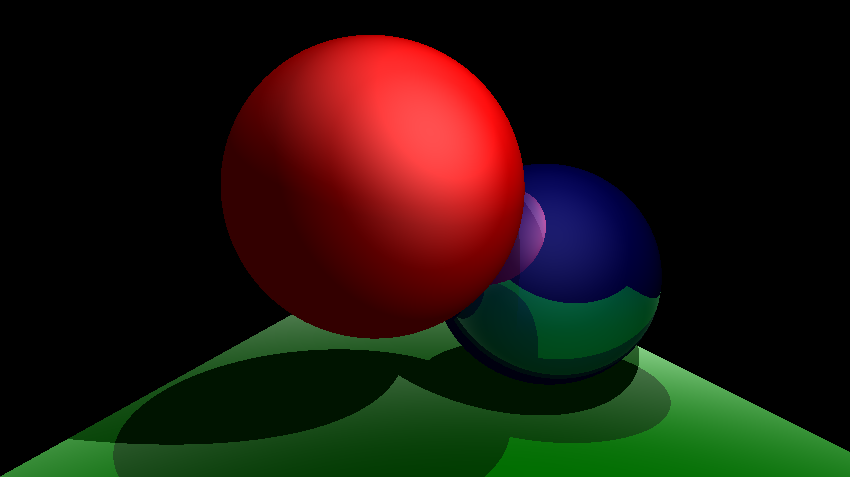

Checkpoint 3 Extra: Ashikhmin Shirley BRDF
nu = nv = 5, 0.4 * specular:
nu = nv = 10, 1.0 * specular:

Not sure what ashikhmin is supposed to look like so here's the code:
Checkpoint 4 Extra: Texture Mapping from Image
Checkpoint 3 specular working
Advanced Tone Reproduction
Assignment 7 Extras
Assignment 7: Tone Reproduction
Assignment 6: Refraction
Assignment 5: Reflection

Assignment 4: Procedural Shading
Assignment 3: Basic Shading
Fixed Specular + Refactored Phong Shading
Broken Specular:
Non-existent Specular:
Extra: Added another light source
Assignment 2: Basic Raytracing

Extra: Moved camera to the left by 3 units and set look at to 5 units farther back on the z:

Assignment 1: Initial Setup

Scene Parameters
- Reflective Sphere: position = (0.45, 0.42, 1), size = (0.272, 0.272, 0.272)
- Transparent Sphere: position = (0, 0.6, 0.5), size = (0.298, 0.298, 0.298)
- Plane: position = (0.5, 0, 2.4), size = (3, 1.32, 1)
- Camera: position = (0, 0.7, -2), look at = (0, 0.49, 0)
- Light: position = (0.4, 7.8, -1)